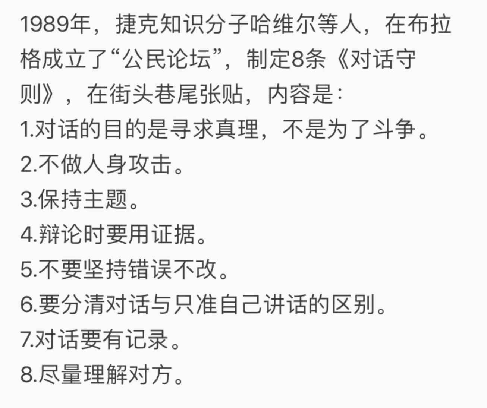
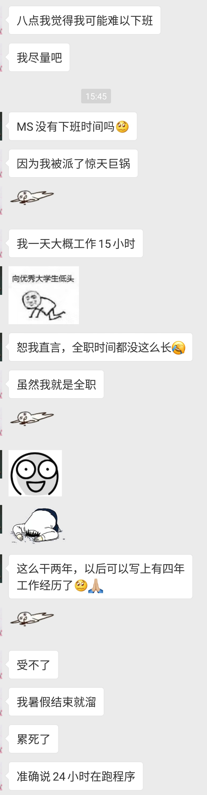

随思乱想
What I thought when I was absent-minded.
2018
没关系 要相信 未来会好的 在某一天
确实，如果没有亲身经历过，是体会不到那种喜悦、那种难受的心情。进球的那一刻，我们是站起来了——不约而同地；还有点球最后一刻的沉默、球员们在球门前抱头哭的情景，是难以用文字或影片表达出来的。这场比赛背后的努力与坚持、期待与失落，除了他们自己，旁人也只是推测。但仅是推测的，也令人肃然起敬。无论如何，汽车牛逼！理想仍在，脚步不停。
—— 2018-04-19 16:44
"我在实验室" "今晚有课" "我在公司" "今晚有课" —— 这或许就是人与人之间的差异吧。
—— 2018-04-20 9:00

园子里的鸟儿啊，你也勤勉如人吗。叽喳的叫声是否也是为了努力生存？
—— 2018-04-20 11:30
突然感受到外联真是辛苦啊。临近ddl各方却无法给出个保证，难受啊难受。
—— 2018-04-21 1:01
雨季来了。
—— 2018-04-21 8:35
“月亮在白莲花般的白云里穿行，晚风里吹来欢乐的歌声。”
—— 2018-04-22 12:05
可能凉凉了，一事无成。
—— 2018-04-24 20:53

截自硕导票圈。
—— 2018-04-25 8:54
绝望啊，老天救我，救我啊老天。
—— 2018-04-26 22:23
确实值得警惕，必须停止了。
—— 2018-04-27 11:23

液氮冰淇淋。
—— 2018-04-28 14:28
最担心被抛弃，最担心无所适从。一觉醒来后发现热闹都是他们的，一切从空而来，将归于空，而欢乐只是孤独者的自愈。宇宙万物生于混沌而归于混沌，我只是沧海一粟，渺小于群星璀璨之中，留下的印迹不足以谈。而欢愉不过空寂的前奏罢了，所作所为似乎是虚度了时光。
—— 2018-04-29 6:20
努力而没有回报是什么感受 :) 别，还是做自己，一切为了自己而不是为了他人的评价。
—— 2018-04-29 6:38
和孟队交流后确实颇多感受。“清华足够大，给你无限可能。”再次听到这句话后，我忽然想起一开始时的踌躇满志，忽然想起自己的初心。而如今自己又在做些什么呢。孟队说目标很重要。是的，确实很重要，而我在很长时间内忘了自己的目标，当然，也有些眼高手低。但总要有些目标。
—— 2018-04-29 21:57
美院大佬啊，你望着窗外忘得出奇，那嫩绿的树叶在阳光的照射下显得生机盎然；
美院大佬啊，你举止言行都展现了别样的气质，那未知命运将把我们各自引向什么地方呢？
—— 2018-05-03 9:30

我是谁，我在哪里，我在做什么？
—— 2018-05-04 15:50
忏悔录：我真是对不起我的兄弟姐妹们（那种意义上的兄弟姐妹），对不起我的儿女子孙们（也是那种意义上的），时至今日我竟然还是弄不清我究竟如何为我。人的意识究竟是否独立于物质而存在，还是物质决定着意识的存在。这么一来，我也对不起那些与我同一肉体的意识们。以当下之名，为他日之意识尽自己当下之义务吧。
—— 2018-05-07 7:33
你是否想起了谁？嗯，是的。
—— 2018-05-07 12:10
最近喜欢听《东方红》，不只是喜欢曲子本身，更是对理想领导人的尊敬。
—— 2018-05-09 13:18
和一群大四学长学姐们坐在紫操看他们本科的最后一次熄灯（或许也是我的，这不可得知）。
—— 2018-05-10 23:10
生于这个数据化的时代，我们的隐私究竟何在?关于之前李的zz言论，我曾说过，反对的大众大多本质上不对以隐私换取便利的行为反感，因为这也算是一种交换行为，但问题是用户需要的是透明度和选择权。我想，霸道的协议和“垄断性”的单方面条件是无人能够接受的。
—— 2018-05-12 7:41
生活究竟通往何方，未来你究竟在何处？
—— 2018-05-12 23:46
开源精神与共产主义？
—— 2018-05-14 9:22
是的，必须停止了，一切都结束了。无论如何，既已往，心勿殇，苍茫大地继如往。
—— 2018-05-23 14:24
毫无希望的人生。
—— 2018-05-31 23:58
宠辱若惊之人难成大事。
—— 2018-06-03 22:14
小时候谁都觉得自己得未来闪闪发光不是吗？
—— 2018-06-03 22:14
还会有未来吗？我不知道。萎枯的花朵是否还能重生，迷途的羔羊是否能走回前列？未来啊你究竟在何方？是坦荡的大道，还是迷雾重重的荒郊？是无尽的征程，还是断壁残戈？生啊，你活得混沌；死啊，你逝如一瞬。
—— 2018-06-04 7:35
相逢又相别，相识又相忘。人生既已如此？
—— 2018-06-04 12:36